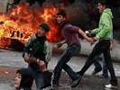
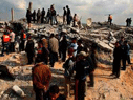
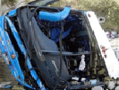
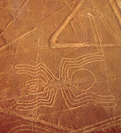

Viernes, 23 de Enero del 2009 - 08:42
Universidad de Columbia celebrará investidura de Obama
La Universidad de Columbia en Nueva York celebrará este martes la toma de posesión de Barack Obama, uno de sus antiguos alumnos, como presidente de Estados Unidos con una fiesta en el campus universitario. En el exterior del recinto universitario se podrá ver el solemne acto a través de una pantalla gigante de televisión y se distribuirá a los asistentes sidra y chocolate caliente, para hacer frente a las gélidas temperaturas de estos días en Manhattan.
Noticias Destacadas
-
 Obama culmina hazaña histórica al juramentar como presidente de EEUU
Obama culmina hazaña histórica al juramentar como presidente de EEUU -  Dos niños pierden la vida al jugar con una bomba de fuerzas israelíes
-  Ministros no logran acuerdo sobre Gaza en cumbre de Kuwait
- Rusia reanudó bombeo de gas a UE por Ucrania tras corte de trece días
-  Mueren tres pasajeros de camioneta arrastrada por trailer en Trujillo
- Afirman que Obama traerá "nueva visión" a relación de Perú con EE.UU.
- Tito Chumpitaz: No bajaremos los brazos porque hemos venido a luchar
- Conoce los riesgos que ocasiona el tomar demasiada agua
- Programa del viernes 02 de enero
- ¿Es recomendable que tenga una mascota cuando hay un bebé recién nacido?
- Ganador de la Pregunta de la Semana – sábado 25 de octubre
- Comenzó la caravana navideña de RPP
- Gastón Acurio y su recomendación gastronómica por Año Nuevo
- RPP premió a los ganadores del Premio Integración y Solidaridad 2008
- Julio Verne y la literatura de anticipación científica
- Historias de búsqueda 11 enero 09
- Del Castillo reconoce error político en reunión con Fortunato Canaan
- Encuentro de navidad en la casa de Micky Rospigliosi
